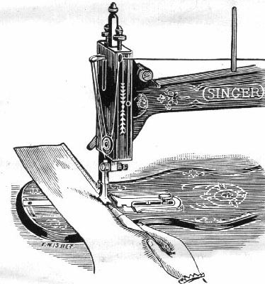
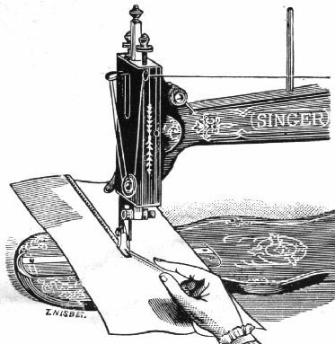
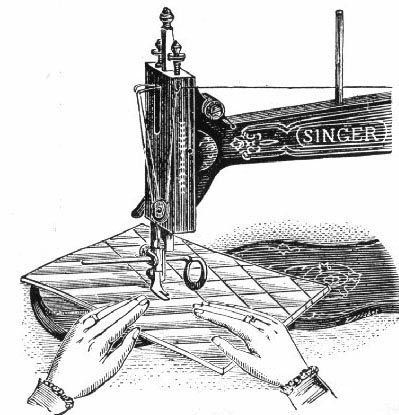
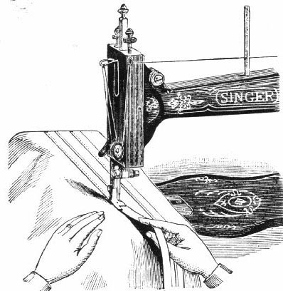
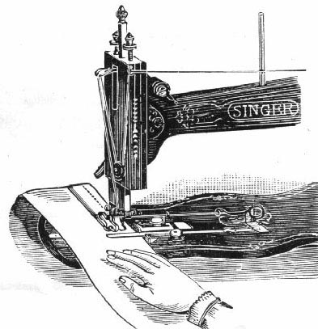

To make a Narrow Hem - Attach the hemmer to the presser bar. Commence the hem by folding it at the end, then pass a thread through it by means of a needle, drawing the thread and the fabric into the hemmer (or pass the edge of the fabric into the hemmer without a thread).
Lower the foot and proceed to sew, guiding the material with the thumb and forefinger of the right hand, taking care to keep the hemmer curl just full. Should the edge begin to run out, move the hand to the right; should too much material run in, move to the left.
To make a Wide Hem - Commence by turning the width of hem required one fold only, adding about one-eighth of an inch, which will be turned under by the hemmer. Pass the edge of the fabric into the hemmer as for a narrow hem, then fix the straight guide to gauge the width, and guide the fabric in the usual manner.

To make a Fell Seam - The two pieces of cloth should be laid, wrong side out, one over the other, with the edge of the under piece a little farther to the right than the upper piece. Stitch the two pieces together about three-eighths of an inch from the edge.
Raise the hemmer foot and open the work out flat, wrong side up, so that the edges will stand up straight. Then push the edges at the beginning of the seam into the mouth of the hemmer, as far as the needle, and lower the hemmer foot. While stitching, keep the material perfectly flat, using both hands.

Attach the guide by passing the horse-shoe shaped clamp over the presser bar from behind, bringing the holes in it in line with that in the presser bar immediately above the presser foot. Through these holes pass the rod of the quilting guide from either side, and when the guide is at the proper distance for the pattern required, tighten the quilter in position by means of the thumb screw in the clamp.
Make a straight line upon the fabric with chalk or by crwasing, and stitch upon it. Then adjust the gauge-arm the required distance for the next line of stitching, and guide the fabric with the line already sewn directly under the gauge arm.

Attach the trimmer to the presser bar. Place the braid, velvet, or ribbon in the slot and under the needle, then guide the material and the trimming to follow the pattern desired.

Attach the marker to the machine by the thumb screw, passing the needle through the eye in the tongue upon the marker lever. Adjust the guide to the desired width for the tuck, and the marker to the required distance from the line of stitching for the centre of the next tuck.
Fix both thumb screws firmly, then stitch the tuck, and the action of the marker will gauge and mark the next one ready for folding.
TO ALL WHOM IT MAY CONCERN:
The improper placing or renewal of the trade-mark "SINGER" or any other of the trade-marks of The Singer Manufacturing Company (all of which are duly Registered Trade-marks) on any machine that has been repaired, rebuilt, reconditioned, or altered in any way whatsoever outside a Singer factory or an authorised Singer agency is forbidden.